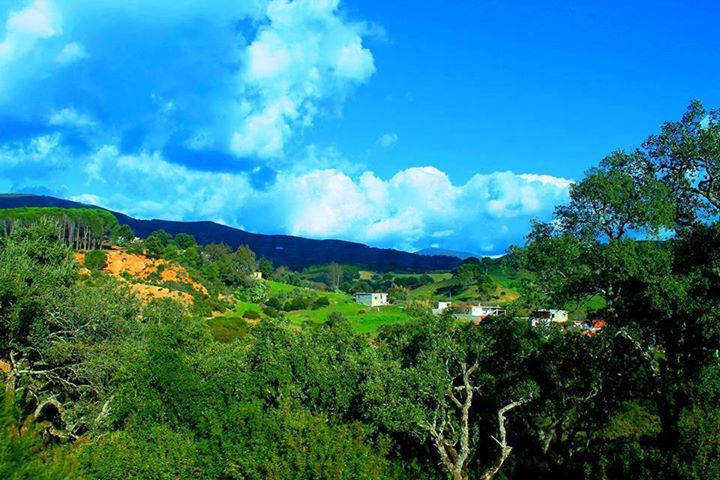
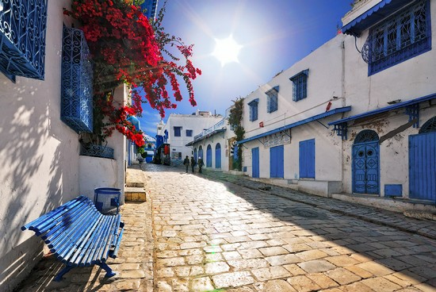
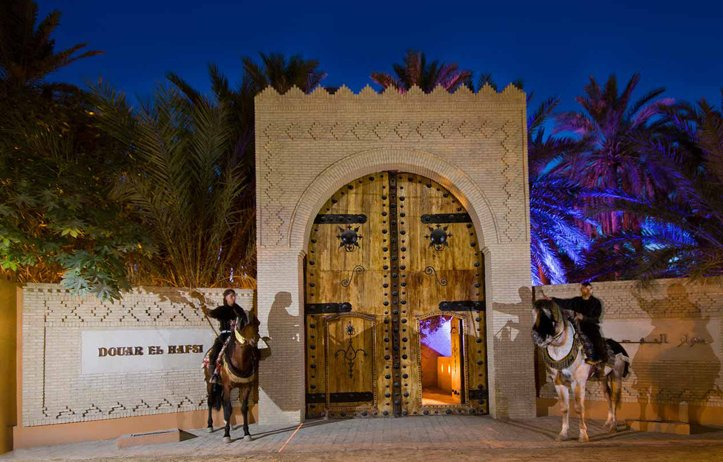
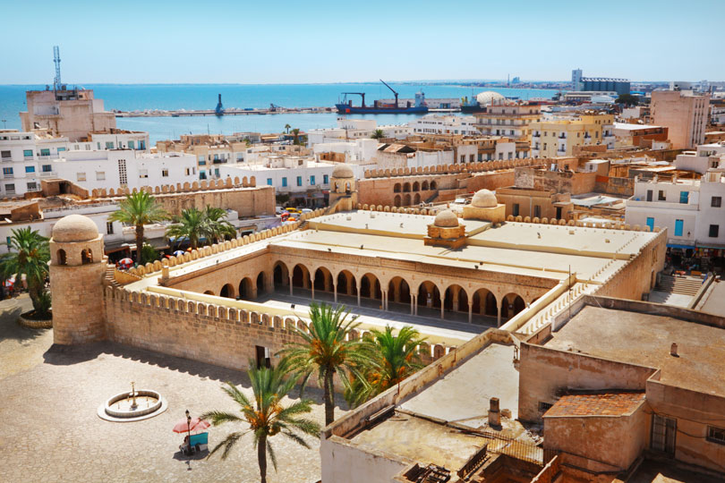

Galeries
-
Ain Drahem
Aïn Draham , Situé au nord de la Tunisie, non loin de la frontière algérienne . Aïn Draham semble avoir été créé pour le bonheur de ceux qui aspirent à des vacances0 tranquilles, loin du vacarme des villes touristiques trop peuplées et bruyantes, loin de la mer et loin du désert où les plaisirs des baignades .
-
Sidi Bousaid
Voici un endroit à découvrir absolument si vous souhaitez visiter la Tunisie. Situé à une vingtaine de kilomètres au nord-est de Tunis, Sidi Bou Saïd est un village très typique aux maisons blanches et bleues. Dominant Carthage du haut de sa falaise, il est le village le plus visité du pays.
-
Tozeur
L’univers des oasis vous plait ? Vous ne pouvez donc pas manquer Tozeur si vous venez visiter la Tunisie ! Elle est la plus belle et la plus grande des oasis.
-
Djerba
Cette île surnommée « Djerba la douce » se situe au large des côtes tunisiennes. Sa superficie est de 514 kilomètres carrés. Vous venez visiter la Tunisie ? Alors ne manquez pas Djerba et ses grandes plages de sable blanc ! Ses maisons typiques, blanchies à la chaux, vous offrirons un dépaysement total.